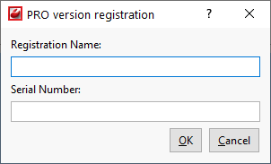

CodeLobster is a cross-platform IDE that provides consistent experience on the Windows, macOS, and Linux operating systems.
Minimal system requirements:
Windows 2000/XP/2003 (Home, Professional or Server edition)/Vista/7/8
50 Mb of free disk space
Monitor resolution: 1024x768
Download the installer
(.exe).
Run the installer and follow the wizard steps.
Select the user interface theme
Select whether you want to use the default Darcula or Light theme.
Download and install additional plugins
If required, download and install additional plugins that are not bundled with the IDE using Plugin Manager.
Once you have obtained a license key for your copy of CodeLobster, you should register it.
To register your copy:
On the main menu, select The About CodeLobster window will open.
Click on the link Enter Serial Number.
The system will open the Product activation window:

Input your Registration Name and Serial Number (specified in the e-mail).
Click the button to register.
| Note | |
|---|---|
If registration doesn't succeed, compare the entered information with the same as in the e-mail. |